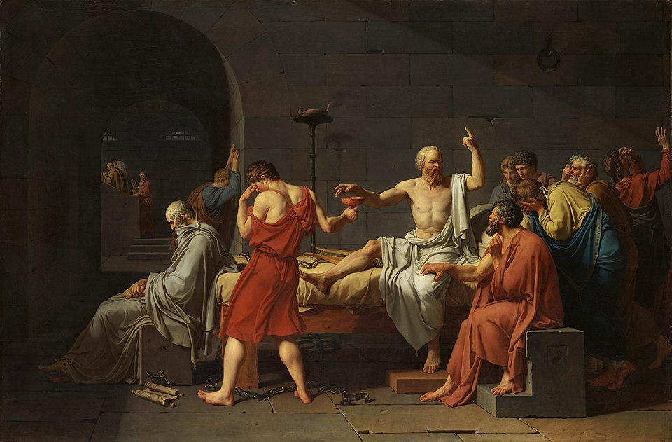
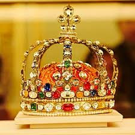
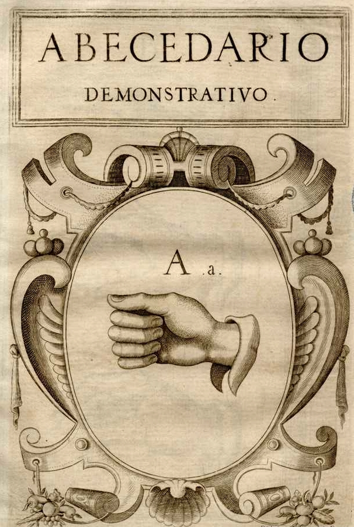
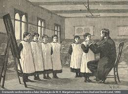
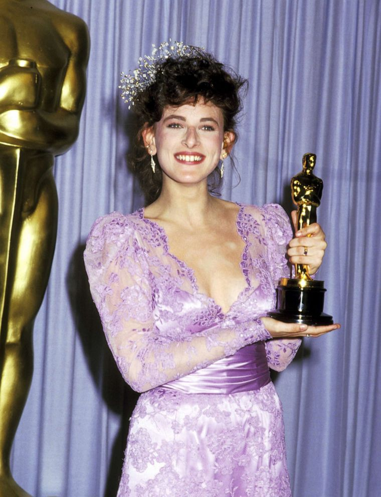
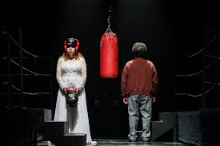
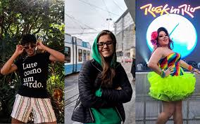

Da antiguidade à cultura surda contemporânea no Brasil e no mundo.

Pessoas surdas eram vistas como incapazes e afastadas da vida social. Alguns filósofos já percebiam a importância de gestos e sinais para a comunicação.

Existem registros de príncipes e princesas surdos em famílias reais europeias. A surdez também esteve presente em contextos de poder e status.

Pedro Ponce de León e Juan Pablo Bonet, na Espanha, criam alfabetos manuais e métodos que provam que pessoas surdas podem aprender e se expressar com sinais.
O abade l’Épée funda em Paris a primeira escola pública para surdos baseada em língua de sinais, inspirando escolas em vários países.
Dom Pedro II convida o educador surdo Ernest Huet e cria o Imperial Instituto de Surdos-Mudos (atual INES). A língua de sinais francesa se mistura aos gestos locais e dá origem à Libras.

Educadores decidem que a educação de surdos deve ser apenas oral. Línguas de sinais são proibidas em muitas escolas, fortalecendo o oralismo.
Pesquisas mostram que línguas de sinais têm gramática e estrutura completas. A Libras passa a ser vista como língua de verdade, e não “mímica”.
Associações de surdos se fortalecem no Brasil. Em 1987, a FENEIS é criada como principal federação da comunidade surda brasileira.

Marlee Matlin se torna a primeira atriz surda a ganhar um Oscar, e o movimento “Deaf President Now” conquista o primeiro reitor surdo na Gallaudet University.
Representantes da comunidade surda brasileira escolhem oficialmente o nome Libras – Língua Brasileira de Sinais, reforçando a identidade linguística.
A Lei nº 10.436 reconhece a Libras como meio legal de comunicação e expressão da comunidade surda no Brasil.
O Decreto nº 5.626 regulamenta a lei, define formação de professores e intérpretes e orienta a educação bilíngue: Libras como primeira língua e português escrito como segunda.

Projetos de teatro em Libras em escolas bilíngues e sessões acessíveis em teatros municipais valorizam a cultura surda na cidade de São Paulo.
Filmes como La Famille Bélier e CODA colocam famílias surdas no centro da narrativa e ampliam o debate sobre língua de sinais no cinema.
O Estatuto da Pessoa com Deficiência reforça o direito à acessibilidade comunicacional, incluindo Libras em serviços públicos, educação, saúde, cultura e trabalho.

Influencers surdos brasileiros usam redes sociais para ensinar Libras, discutir identidade surda e ampliar a visibilidade da comunidade.
A Lei nº 14.191 inclui a educação bilíngue de surdos como modalidade específica da educação básica, reforçando o direito de crianças surdas aprenderem em Libras.
Libras está mais presente na mídia e nos espaços culturais, mas ainda é necessário ampliar o ensino da língua para ouvintes, garantir intérpretes e fortalecer o protagonismo da comunidade surda.